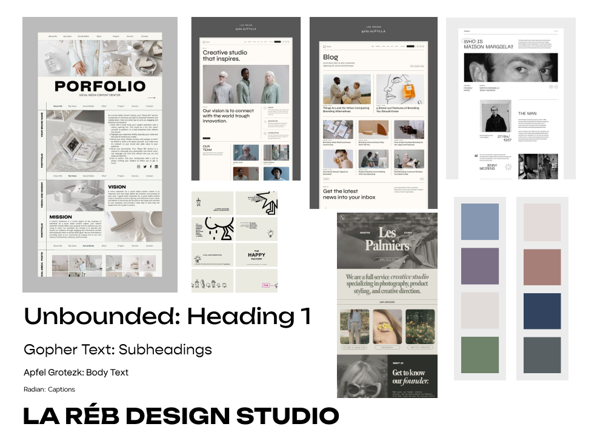
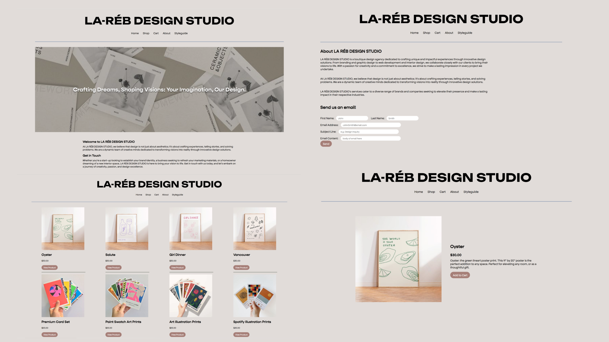

FEB. - MAR. 2024
LA RÉB DESIGN STUDIO Website
Academic Project, Web Design and Development (IAT 339)

Overview
The goal of this project was to create a fully responsive website for a hypothetical store in collaboration with a partner coding in GitHub. My partner and I created the company “LA REB DESIGN STUDIOS” that sold design prints and created an online storefront.
My Roles
Visual Design, HTML Coding, Branding and Art Direction
Tools
Figma, Atom, GitHub
Team
Areeba Ali, Lauryn Yau
Process Analysis
Moodboard and Styleguide
We created a moodboard of inspiration for our brand’s colour palette and typefaces and inspirations for the final website. I researched other websites and photos of other web layouts for inspiration and created our potential colour palettes. Pulling inspiration from secondary resources, I found pieces of media that reflected a modern, sophisticated theme, with pops of colour to communicate the ideals of our design company (professional and creative).
Project Moodboard
HTML and CSS Coding
To ensure consistency with our website’s elements we created a styleguide that held example HTML code for elements such as buttons, form comments and product listings to be reused as needed throughout the webpage. Taking elements from the styleguide, a template was created to form a “skeleton” of necessary pages such as a homepage, product listings and shopping cart/checkout.
I coded a majority of the HTML and CSS code using Atom (to later be moved to GitHub for easier collaboration), by first coding smaller elements (buttons, in-text links, header texts) and putting those smaller elements together to create sections of the website (shopping cart, product listings and checkout boxes) to then add to page templates. I created 'real' content (descriptions and images) to be added to the templates to create the finalized webpages.
Project Conflicts and Solutions
My partner and I struggled to create a web experience that was easy for the user to navigate. I was unsure how to utilize a responsive interface to allow the user to know what was clickable and understand the purpose behind the site’s elements.
To solve this issue I asked others to test run our website given a specific task (for example, I asked the participants I gathered to open the site and navigate adding a product to the cart and checking out) and narrate their thought process aloud. This way I could see where buttons or more interaction feedback needed to be added for users to understand the site, and make navigating the site easier, and requiring less moving back and forth between pages. As a result our UI became more user-friendly and created a more pleasant experience that was enjoyed by users.
Project Reflections
This project allowed me to exercise my skills in HTML and CSS and user testing. HTML was a new skill for me when completing this assignment. I utilized many online resources and the process of creating the site and making it responsive and adaptable involved trial and error. During this project I allowed myself to experiment with colour palettes, however I still feel that I could have done something more creative with the colours in the final site, as the final product still looked very monochromatic, and similar to how I usually like to use colour.
Screencaps of the final site (top row: homepage, company page, bottom row: product listings(multiple and individual))